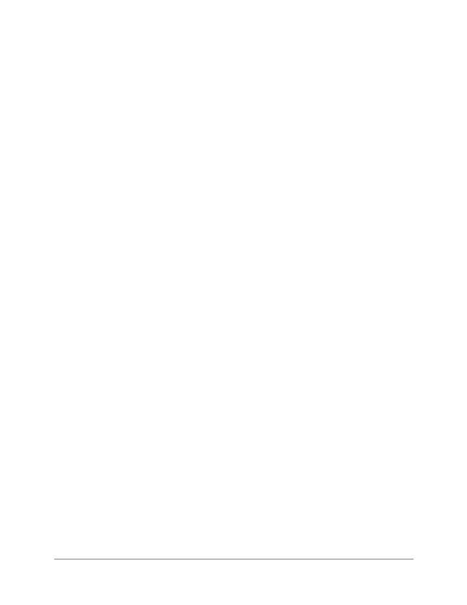
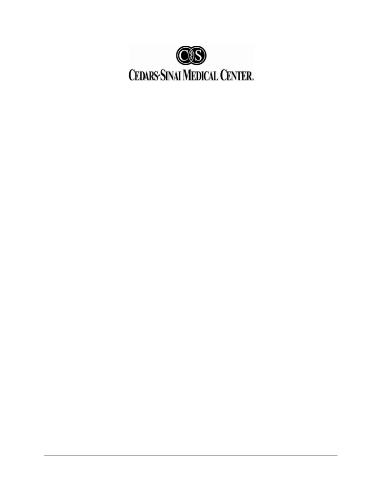

Online Consent/Authorization Form
My Nutritional Health App Testing
Brennan Spiegel, MD, MSHS
Phone: (310)423-6467
Email: Brennan.Spiegel@cshs.org
You are being invited to participate in a research study that involves using a mobile application
(My Nutritional Health) to track food intake and any gastrointestinal symptoms or suspected food
intolerances related to the food you ate. In addition, you will be asked to complete surveys. This
research study is conducted by Dr. Brennan Spiegel at Cedars-Sinai Medical Center.
The research study is sponsored by Nestle. They provide funding to cover the costs of conducting
this study.
The purpose of the research is to study the impact of the My Nutritional Health Application. The
My Nutritional Health App allows you to maintain a food diary and to track gastrointestinal (GI)
symptoms through the Food and Symptoms Tracker (FAST). The goal of the research study is to
examine the relationship between your GI symptoms and food.
Procedures
You are being asked to take part in this research study because you are scheduled to see a
dietician at a future appointment, as part of your routine clinical care. You have already been sent
an email with instructions on how you can download the My Nutritional Health Application. You
will want to open the email on the device that you will be downloading the app too. You will select
the link in this email and it will take you to where the app can be downloaded. You will select
“install app” to your device and be prompted through the installation process. Once you have
downloaded the app, you will be prompted to answer questions related to your food intake, and
mental or physical symptoms that may suggest food intolerance.
These questions will range from time of meal, meal content, gastrointestinal symptoms (belly pain,
gas, nausea, bowel frequency, and heartburn), as well as non-gastrointestinal symptoms
(migraines, fatigue, brain fog). You will answer these questions twice; 1 week (7 days) prior to your
appointment with the dietician, and 1 week (7 days) immediately following your appointment. If
you forget to log into the app and complete the questions, you will be sent a push notification to
prompt you. A member of the study team will also reach out to you via telephone on day 3 of each
week to inquire about your progress, assist in trouble shooting for technical difficulties, and
answer any questions that you might have.
When you have completed two weeks of participation, you can go to your settings menu within
your device and select “Apps”. Scroll through to find the My Nutritional Health App and select
“uninstall”. The application will then be uninstalled from your device.
Version 7/2011

Participant Requirements
Participation in this study is voluntary and limited to individuals 18 years or older, who have an
upcoming appointment with a Cedars Sinai Medical Center dietician. Participants must also have
access to a modern smartphone or device (iOS or Android) with internet access. Participants are
also required to read English.
Risks
The risks and discomforts associated with participation in this study are no greater than those
ordinarily encountered in daily life or during other online activities. You may experience
discomfort when answering certain questions, however, you may skip any question that you do
not wish to answer.
It is possible that the research procedures could uncover information related to your health that
you did not know about before and that is unrelated to the Study. Some of these findings may be
too preliminary to share. Cedars-Sinai will carefully consider the research findings and determine
if they should be shared with you. Research findings would only be shared with you if such sharing
is approved by the Cedars-Sinai IRB and is permitted by applicable law. In some cases, additional
clinical testing may be required. The cost of any additional testing and any related treatment will
be your responsibility.
Benefits
There may be no personal benefit from your participation in the study but the knowledge received
may be of value to society in general.
Compensation & Costs
You will not be in danger of any illness or injury from this research study. However, should you
believe that you are ill or have been injured as a result of your participation, please contact the
study team at the phone number listed on page 1 of this consent form.
There are no costs related to your participation in this study. You will receive a total of $100.00 for
your participation in the study. The amount will be prorated based upon your participation for
week 1 (prior to appointment with the dietician), of which you will receive $40.00, and for your
participation for week 2 (following your appointment with the dietician) where you will receive the
remaining $60.00. If you do not complete the entire research study, you will only be paid for those
procedures you do complete. You may be required to complete a W-9 Form in order to receive
payment. The W-9 Form will be maintained by our accounting department at Cedars-Sinai.
Although any amount of payment may be reportable (check with a tax professional if you have
questions about your obligations), if total payment by Cedars-Sinai is $600 or more in a calendar
year, a 1099 Form will be filed with the IRS in accordance with federal tax law.
Version 7/2011
Confidentiality
Once you have completed this survey, your personally identifiable information will be
transmitted over the internet to Cedars-Sinai Medical Center. Although every reasonable effort
has been taken to ensure that your information is encrypted, confidentiality during the actual
internet communication procedure cannot be guaranteed.
The data and information gathered during this study may be used by the investigator and
published and/or disclosed outside of Cedars-Sinai Medical Center in publications or other
dissemination of the research data. In these cases, however, your name, address, contact
information and other direct personal identifiers will not be mentioned in any publication or
dissemination of the research data and/or results by the investigator.
People inside and outside of CSMC may need to see your information for this study. Information
collected about you during the course of this research may be subject to inspection by accrediting
agencies, government agencies in the US and other countries and regulatory groups (e.g. Food and
Drug Administration (FDA), Office for Human Research Protections (OHRP), etc.), safety monitors,
and companies that sponsor the study and their designees. These agencies are responsible for the
oversight of this research.
What information will you learn about me as part of this research?
You are being asked for your authorization to allow the research team acting under the direction of
the Principal Investigator to collect health information about you as described under the section
“Procedures”
You are being asked for your authorization to allow the research team acting under the direction of
the Principal Investigator as described in the Consent Form to collect health information about you
(“private information”).
The following private information about you will be placed in the research study records:
• Name;
• Street address [city, county, precinct, zip code, and their equivalent geocodes];
• Telephone numbers;
• Fax numbers;
• Birth date and other indicators of your age;
• Electronic mail address;
• Social Security number (for compensation purposes only); and
• Codes assigned in connection with the study to only your information that could be used to
identify you.
Who will have access to your private information?
Your private information will be used by and/or shared with the investigators listed in Section One of
this consent form and their research team as part of the research study. Reasonable efforts will be
made to assure that the research team will have access only to the private information about you
Version 7/2011
that is minimally necessary to conduct the research study. Additionally, the following parties may
receive information about you:
• Other non-Cedars-Sinai Medical Center researchers who are participating in this research study
at other sites: [University of Michigan]
• Medical and other health care professional students who are assisting with tasks for the research
study
• The Study Sponsor (in other words the organization that is paying for the costs of the research
study) for matters related to research study oversight, data analysis and use of research results in
product development
• Representatives from regulatory agencies in other countries may join in the review of your
research records, including research-related medical reports and information, with the Sponsor
and/or the FDA.
How long will my authorization for use of private information be in effect?
By signing this document, you authorize the use and sharing of your private information until
01/31/2020.
Withdrawal of Authorization
You have the right to withdraw your authorization for us to use your health information at any time.
You must write to the principal investigator to withdraw your authorization. The mailing address is:
Brennan Spiegel, MD
116 N. Robertson Blvd. Suite 400,
Los Angeles, CA 90048.
However, if we have provided your information to the sponsor of this research, the study's data
coordinating center, or other outside entities, that information cannot be withdrawn. Any
information already obtained at the time you withdraw your authorization may continue to be used
as necessary to ensure study integrity. For example, it may be necessary to continue to use your
information to conduct investigations or to report adverse events.
Further disclosure (sharing) of your private information
Your private information will be shared by the Principal Investigator and CSMC only as needed for
the research study. CSMC makes an effort to ensure that recipients of your information take steps
to maintain the confidentiality of your private information and only receive the information that they
need, and not more. Certain individuals or organizations that may receive your private information
could though, in very limited circumstances, reveal it for purposes not related to the research study.
This would be an unauthorized and illegal disclosure (sharing) of your information. In this study, the
Principal Investigator does not anticipate that this will happen. Moreover, in California, the law
prohibits such further disclosure of private information without another signed authorization from
you (unless the law requires the particular disclosure, such as to report suspected child abuse).
Version 7/2011
Notice of Rights and Other Information
You have a right to receive a copy of this Consent and Authorization Form.
If you are not comfortable with how your private information might be used, you can choose not to
give your authorization for us to use this information. This choice is a very important right that you
have. For more information about your rights as a research participant, see the Rights As A Human
Research Participant box at the beginning of the consent form.
If you have any questions after reading the following sections, please contact the Principal
Investigator at the number listed in Section One. The Principal Investigator and CSMC are required
by law to protect your private information. By signing this document, you authorize the use or
disclosure of your private information in connection with the research study as described above.
Right to Ask Questions & Contact Information
If you have any questions about this consent form or the study, you should feel free to ask
them by contacting the Principal Investigator by mail, phone or e-mail as noted in the contact
information listed above. If you use e-mail, you should be aware that confidentiality during the
transmission process cannot be guaranteed. Therefore, we do not suggest using email to relay
any private or sensitive information.
If you have questions regarding your rights, concerns, or complaints about taking part in this
study, please contact:
CSMC Institutional Review Board (IRB)
Phone: (310) 423-3783
Email: ResearchConcerns@cshs.org
The CSMC IRB has been established to review, approve, and monitor all human research at
CSMC with the purpose of minimizing risks and protecting the rights and welfare of research
participants.
Voluntary Participation
Your participation in this research is voluntary. You may discontinue participation at any time.
If you have any questions or concerns about the information in this consent form or about this
study, you should not agree to participate until all of your questions have been answered.
Please contact the following individual before proceeding:
Alma Jusufagic, MPH
Study Coordinator
(310) 423-6721
Alma.Jusufagic@cshs.org
Version 7/2011

EXPERIMENTAL SUBJECT’S BILL OF RIGHTS
In accordance with California Health and Safety Code 24172, any person who is required to
consent to participate as a subject in a research study involving a medical experiment or who is
requested to consent on behalf of another has the right to:
1.
Be informed of the nature and purpose of the experiment.
2.
Be given an explanation of the procedures to be followed in the medical experiment, and
any drug or device to be utilized.
3.
Be given a description of any attendant discomforts and risks to the subject reasonably to
be expected from the experiment.
4.
Be given an explanation of any benefits to the subject reasonably to be expected from the
experiment, if applicable.
5.
Be given a disclosure of any appropriate alternative procedures, drugs or devices that
might be advantageous to the subject, and their relative risks and benefits.
6.
Be informed of the avenues of medical treatment, if any, available to the subject after the
experiment if complications should arise.
7.
Be given an opportunity to ask any questions concerning the experiment or the procedure
involved.
8.
Be instructed that consent to participate in the medical experiment may be withdrawn at
any time and the subject may discontinue participation in the medical experiment without
prejudice.
9.
Be given a copy of any signed and dated written consent form used in relation to the
experiment.
10.
Be given the opportunity to decide to consent or not to consent to a medical experiment
without the intervention of any element of force, fraud, deceit, duress, coercion, or undue
influence on the subject’s decision.
___________________________________________
___________________________
Signature of Experimental Subject
Date
Version 7/2011